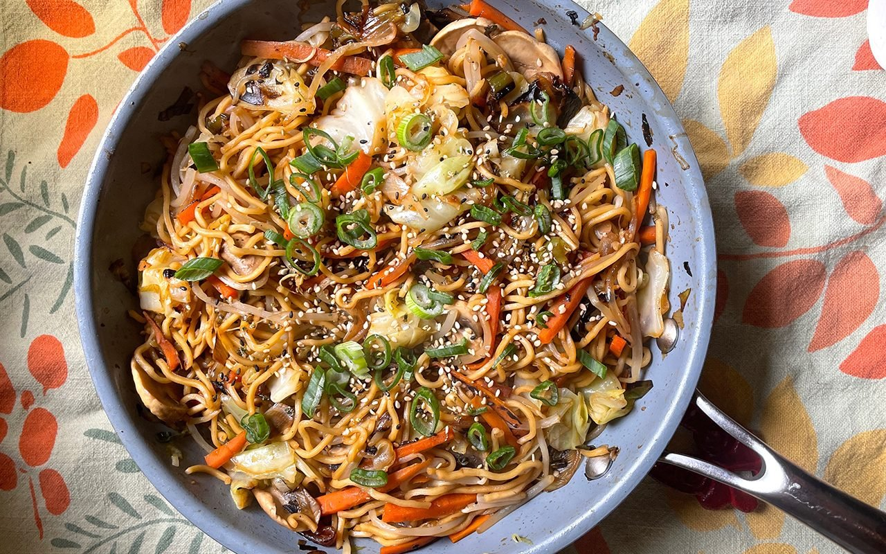
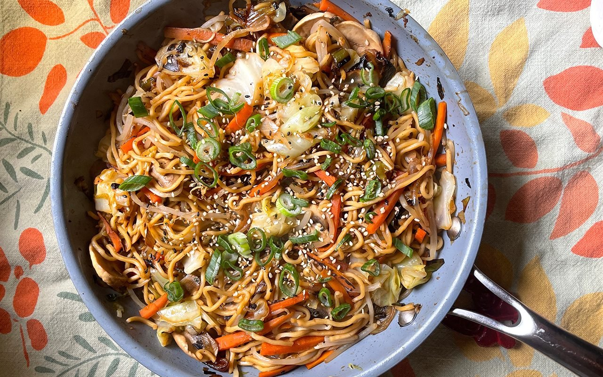
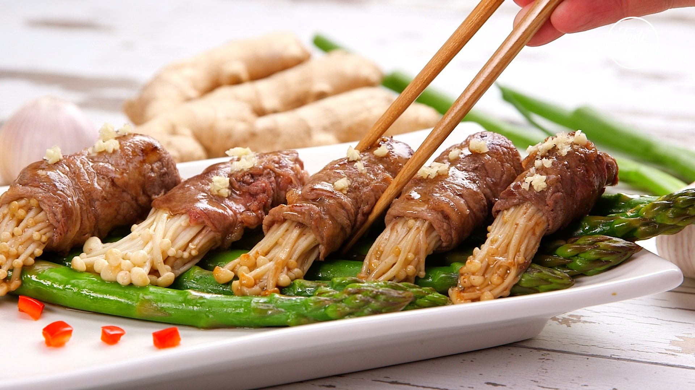
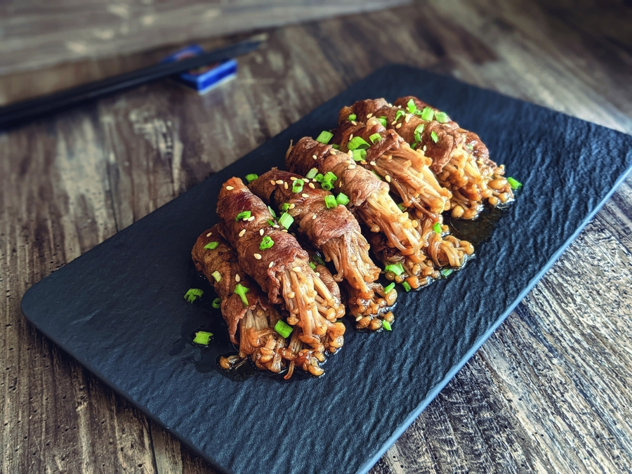

Japanese Food Recipes
I am going to share two popular Japanese dishes below. They are Yakisoba and enoki mushroom beef rolls.
Recipe for Yakisoba
Yakisoba is a typical fried noodle in Japan. It made with noodles, meat and vegetables and seasoned with sweet-savory sauce. It is also a famous Japanese street food and popular in festivals and events.
 

Cooking Instructions
- Boil the ramen noodle and then rinse with cold water.
- Whisk worcestershire sauce, ketchup, oyster sauce and white pepper together in a bowl and set aside. This is the sauce for making the dish.
- Heat the pork belly with oil in the pan until the fat from pork belly render out. Then, add carrots, onions, and cabbage to the pan to cook until aromatic.
- Add noodles to the pan and stir it. Then add the sauce and green onion to the pan and cook for 1 minute.
| Ingredient | Quantity |
|---|---|
| onion | 100 grams |
| green onions | 100 grams |
| green cabbage | 100 grams |
| carrot | 60 grams |
| pork belly | 100 grams |
| vegetable oil | 1 tablespoon |
| Tomato sauce | 1 tablespoon |
| oyster sauce | 1 tablespoon |
| white pepper | half tablespoon |
| ramen noodle | 200 - 250 grams |
| Worcestershire sauce | 2 tablespoons |
Recipe for Enoki Mushroom Beef Rolls
Enoki mushroom beef rolls is a Japanese appetiser. It made with enoki mushrooms rolled with sliced beef and seasoned with soy sauce.


Cooking Instructions
- Mix soy sauce, cooking wine, sugar, garlic, ginger, and chilies in a bowl. Then add sliced beef in the bowl and let it marinate.
- Soak the enoki mushrooms with hot water until it is soft. Then, roll the enoki mushrooms with sliced beef.
- Cook the rolled enoki mushrooms in the pan until all sides of the sliced beef is cooked.
| Ingredient | Quantity |
|---|---|
| soy sauce | 6 tablespoons |
| cooking wine | 6 tablespoons |
| sugar | 4 tablespoons |
| minced ginger | 2 tablespoons |
| chilies | 1 tablespoon |
| garlic | 5 pieces |
| enoki mushrooms | 2 packs |
| sliced beef | 1 pound |
| salt | 1 tablespoon |